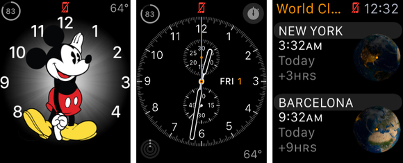
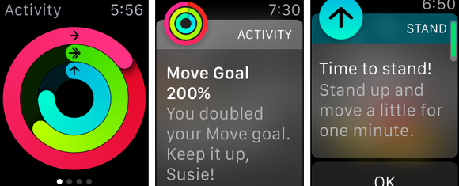
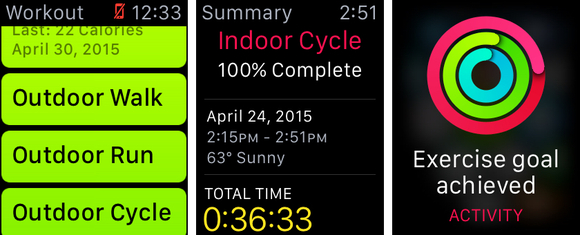
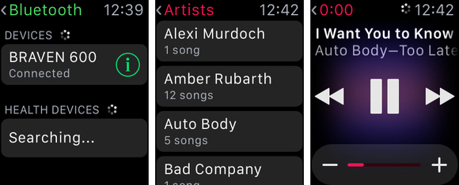
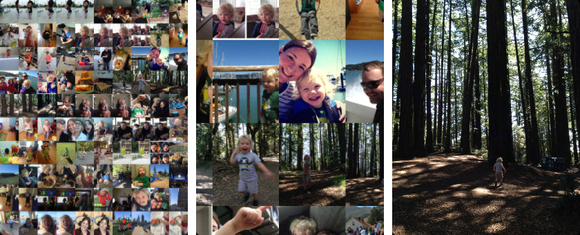
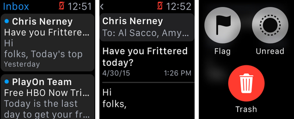
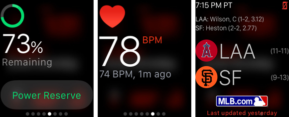
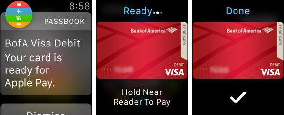

What can your Apple Watch do without your iPhone?

Strapped to your wrist, the Apple Watch goes everywhere that you go. Between it and the iPhone, it’s almost possible to leave your wallet at home. But what happens to the Watch when you leave your iPhone at home?
Smart as the Apple Watch is, it’s still dependent on your smartphone for a number of its most common features, most notably anything that requires access to the Internet or pulls data from apps on your phone. But even should your iPhone be elsewhere—or off—your Apple Watch is still a pretty competent device.
Time is of the essence

Obviously the watch can tell time whether your iPhone is around or not. If it couldn’t, that would be downright nutty.
First and foremost, the Apple Watch is a watch , so it’s probably a good thing that it’ll keep telling time even when your phone isn’t around—otherwise, it’s a very expensive wrist weight. But the good news is that all the time-related features of the Apple Watch—the world clock, alarms, timer, and stopwatch—continue to work as well. So at worst, you’re still left with a very capable timepiece.
Move around

Since the Apple Watch tracks your activities with its own sensors, the Activity app works the same if your iPhone is present or not. (Click to enlarge.)
Fitness and exercise is obviously a big part of what the Apple Watch can do, so it’s a good thing that most of those features continue to work even when your phone isn’t nearby. You can continue to track your move, exercise, and stand progress in the Activity app or glance, so don’t worry if you take a walk without your iPhone—you’ll still get credit for those calories burned and time spent exercising and standing, so you can be sure to hit all your Activity goals. You can also continue to use the Heart Rate glance to check in on that as well.
Work it good

If you log an iPhone-free exercise session with the Workout app, you’ll get everything but a GPS routing of your route. But how often do you look at your old running routes anyway?
If you want to go for a run without having to tote a bulky phone, the Apple Watch’s exercise capabilities are pretty much self-sufficient. All of the watch’s onboard sensors, such as the accelerometer and the heart rate monitor, keep on trucking even when your phone’s not around. Just fire up the Workout app, pick your exercise type and goal, and leave the iPhone at home.
Listen up
But what’s a workout without some music? While the Apple Watch can be used to control music on your iPhone, it can also store tunes locally. Open the Apple Watch app on your iPhone and select Music. Tap Synced Playlist and you’ll see a list of your existing iTunes playlists (synced via iCloud); the songs on that playlist will be available even when your phone isn’t around.

Once you pair Bluetooth headphones or a speaker, you can play music stored directly on your Apple Watch.
Of course, the Apple Watch has far less storage onboard than even the stingiest of iPhones. You can use the Playlist Limit option to adjust how much space is devoted to music, either in terms of raw capacity (100MB, 500MB, 1GB, or 2GB) or number of songs (15, 50, 125, or 250). Think of it more or less like an iPod shuffle that you wear on your wrist.
But you can’t listen to your music on the Apple Watch’s built-in speakers—and probably wouldn’t want to anyhow. Instead, connect a pair of Bluetooth headphones, or even a Bluetooth speaker if you’re staying put. Just put your headphones into pairing mode, launch the Settings app on the watch, tap Bluetooth, and wait for the headphones to show up under the Devices heading. Tap to pair, and you’re all set.
Photo finish

You can save your favorite photo album to your Apple Watch—use the Digital Crown to zoom in on the grid of images, and then swipe between individual photos with your finger.
As with music, the Apple Watch spares some local storage space for photos. By default, it syncs photos you’ve marked as Favorites on your iPhone or in Photos for Mac, though you can select another album for it to sync. And like music, you can choose how much space to devote to storing photos locally: From 5MB (25 photos) to 75MB (500 photos). Since they’re stored locally, you can always pull those photos up on your phone, just in case you want to remember what your loved ones look like in those trying moments when you can’t get online.
Cache cachet

Take a chance to catch up on old email. You can’t reply to email on the watch (you’d have to hand off to another device), but you can flag messages to follow up, or delete the ones you don’t need.
While the lack of a network connections means you won’t get any new information on your Apple Watch, much of the data that’s been downloaded there is still active. So browsing through the Mail, Calendar, and Messages app will show you whatever information was current the last time you had a connection to your phone. You can read messages, browse appointments, and check your message history to your heart’s content.
At a glance

When your iPhone is connected, some glances will still work like normal, while others (looking at you, MLB) might be a bit behind.
Finally, while third-party apps and those that require an active data connection won’t be too helpful when you’re without your phone, many of the Apple Watch’s glances will still be useful, albeit a bit stale. Most will continue to show whatever information was most recently retrieved, with a note about when exactly that Glance was last updated. Because sometimes old news is better than good news.
Apple Pay
One of the Apple Watch’s best features is that it brings Apple Pay to another device. Once you set up your cards using the Apple Watch app for iPhone, you don’t need the iPhone around to make a purchase, since the Apple Watch has its own Secure Element to store your device’s ID number. When it’s time to make a payment, just tap the Apple Watch’s button twice to bring your default card to the screen. (If you have more than one card, you can switch between them at this point.) Then hold your watch to the payment terminal—you probably have to point the screen down, away from you, but you’ll hear a beep and feel a buzz when the transaction goes through.

Apple Pay is awesome on the Apple Watch, even better than on the iPhone 6 and 6 Plus.
Your Apple Watch will automatically lock if you take it off, which means that if you lose it or it’s stolen, whoever has it couldn’t use Apple Pay unless he or she could first unlock your watch with its passcode. You can optionally unlock the Apple Watch by simply unlocking your iPhone, so if you’re paranoid about losing both of them at the same time, you might want to turn that option off in the Apple Watch app for iPhone. (It’s in My Watch > Passcode, under “Unlock with iPhone.”)
Granted, an Apple Watch without a data connection may not have quite the same smartwatch appeal, but at least there should be enough to do to tide you over until you’re reunited with your iPhone once again.

 Amazon Shop buttons are programmatically attached to all reviews, regardless of products' final review scores. Our parent company, IDG, receives advertisement revenue for shopping activity generated by the links. Because the buttons are attached programmatically, they should not be interpreted as editorial endorsements.
Amazon Shop buttons are programmatically attached to all reviews, regardless of products' final review scores. Our parent company, IDG, receives advertisement revenue for shopping activity generated by the links. Because the buttons are attached programmatically, they should not be interpreted as editorial endorsements.


{kind=link}
{kind=link}
{kind=link}
{kind=link}
{kind=link}
{kind=link}
{kind=link}
{kind=link}